In the models we explored so far, individuals decide whether to copy or not according to various rules, often called “transmission biases” in cultural evolution jargon. They may have a tendency to copy common traits, or to copy a subset of the population, or to prefer certain cultural traits with respect to others by virtue of their intrinsic characteristics, and so on.
A characteristic of all these models is that these rules were considered stable, or changing (perhaps because of genetic evolution) very slowly in comparison to the timescale considered in the model, so that we considered them as foxed. However, cultural evolution can also influence its own rules, that is, we can learn from others when, what, or from whom to learn from. This is far from being a rare instance: parents, at least in modern western societies, invest much effort in transmitting to children that learning from schoolteachers is important, or teenagers group discourage learning from other groups, or from adults in general. Educational system in countries such as Korea or Japan are thought to encourage pupils to learn and trust teachers almost unconditionally, whereas in countries like UK and USA, the emphasis is on individual creativity and critical thinking.
Openness and conservatism
How can we approach the social learning of social learning rules with simple models? To start with, we can imagine that individuals learn from others whether to copy others or not. We can imagine the simplest possible dynamic, where a single trait, P, both regulate the probability to copy from others and is the trait that is actually copied. When an individual has P=1 always copies others (we will call it a completely “open” individual), and when it has \(P=0\) he never copies others (we will call it a completely “conservative” individual). All intermediate values of P are possible. [NOTE: P IS A CONTINUOS TRAITS. WE WILL PROBABLY HAVE INTRODUCED THEM BEFORE, OTHERWISE WE NEED TO SAY SOMETHING]
library(tidyverse)
set.seed(111)
N <- 1000
population <- tibble(P = runif(N))
After initialising the population with a random uniform sample of values of P, we can write the function to run the simulations.
openness_conservatism <- function(N, t_max, r_max) {
output <- tibble(generation = rep(1:t_max, r_max), p = rep(NA, t_max * r_max), run = as.factor(rep(1:r_max, each = t_max)))
for (r in 1:r_max) {
population <- tibble(P = runif(N))
# create first generation
output[output$generation == 1 & output$run == r, ]$p <- sum(population$P) / N # add first generation's p for run r
for (t in 2:t_max) {
previous_population <- population # copy individuals to previous_population tibble
demonstrators <- tibble(P = sample(previous_population$P, N, replace = TRUE)) # choose demonstrators at random
copy <- previous_population$P > runif(N) # choose individuals that copy, according to their P
population[copy, ]$P <- demonstrators[copy, ]$P # copy
output[output$generation == t & output$run == r, ]$p <- sum(population$P) / N # get p and put it into output slot for this generation t and run r
}
}
output # export data from function
}
EXPLAIN THE CODE HERE
We can now run the simulation, and plot it with a slightly modified function plot_multiple_runs() (we just need to change the label for y-axis).
plot_multiple_runs_p <- function(data_model) {
ggplot(data = data_model, aes(y = p, x = generation)) +
geom_line(aes(colour = run)) +
stat_summary(fun.y = mean, geom = "line", size = 1) +
ylim(c(0, 1)) +
theme_bw() +
labs(y = "p (average value of P)")
}
data_model <- openness_conservatism(N = 1000, t_max = 50, r_max = 5)
plot_multiple_runs_p(data_model)
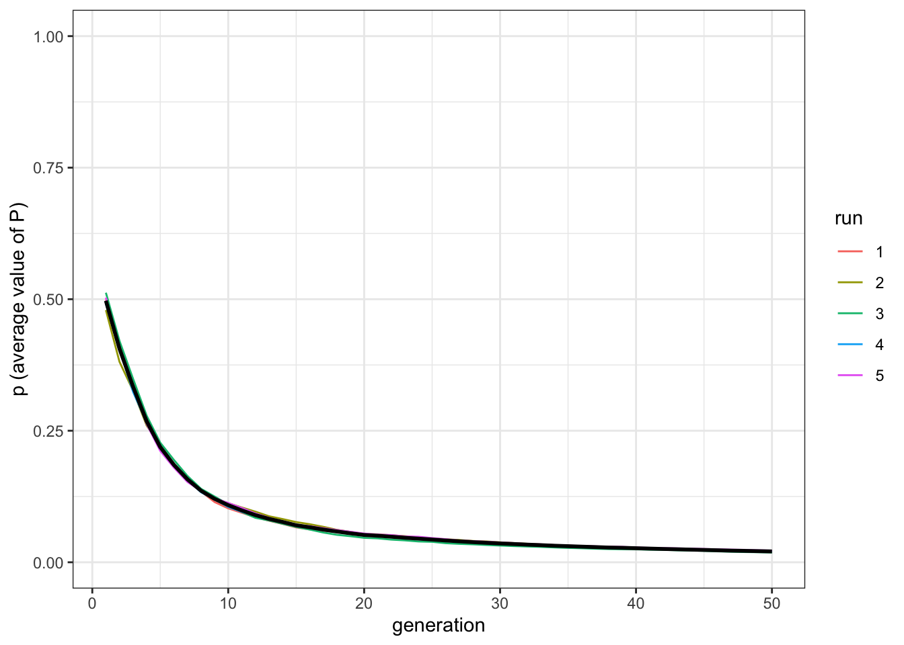
The average value of P in the population quickly converges towards 0 (in fact, towards the lower initial value, as there are neither mutations or innovations) in all runs. At this point of the book, you should be able to introduce mutation and innovation, as well as initialising the population with different values of P. What would happen, for example, if individuals start with values of P clustering around 1, that is, they are all initially very open? Another possible modification is that, when two individuals are paired, the individual with the higher P, that is the most open of the two, copy the other one.
At the risk of ruining the surprise, the main result of populations converging towards maximum conservatism is robust to many modifications (but you should try your own, this is what models are about). The result seems at first sight counterintuitive: the outcome of social transmission is to eliminate social transmission! A way to understand this result is that, conservative individuals, exactly because they are conservative, change less than open individuals and, in general, transitions from open to conservative happen more frequently than transitions from conservative to open. Imagine a room where people are all copying the t-shirt colors of each other, but one stubborn individual, with a red t-shirt, never changes. At some point, slowly but surely, all individuals will wear red t-shirts.
Maintaining open populations
The result above highlights a possibly interesting aspect of what could happen when social learning rules are themselves subject to social learning, but it does not represent, of course, what happens in reality. Some models, such as the Rogers’ model we explored in [chapter 8][Rogers’ model], are useful exactly because they force us to think how reality differs from the modeled situation. Individuals, in real life, remain open because learning from others is, on average, effective, and increase their fitness.
However,
openness_conservatism_2 <- function(N, M, mu, p_death, t_max, r_max){
output <- tibble(generation = rep(1:t_max, r_max), p = rep(NA, t_max * r_max), m = rep(NA, t_max * r_max), run = as.factor(rep(1:r_max, each = t_max)))
for (r in 1:r_max) {
population_preferences <- matrix( runif(M * N), ncol = M, nrow = N)
population_traits <- matrix(0, ncol = M, nrow = N)
output[output$generation == 1 & output$run == r, ]$p <- mean(population_preferences)
output[output$generation == 1 & output$run == r, ]$m <- sum(population_traits) / N
for(t in 2:t_max){
# innovations
innovators <- sample(c(TRUE, FALSE), N, prob = c(mu, 1 - mu), replace = TRUE)
innovations <- sample(1:M, sum(innovators), replace = TRUE)
population_traits[cbind(which(innovators == TRUE), innovations)] <- 1
# copying
previous_population_preferences <- population_preferences
previous_population_traits <- population_traits
demonstrators <- sample(1:N, replace = TRUE)
demonstrators_traits <- sample(1:M, N, replace = TRUE)
copy <- previous_population_traits[cbind(demonstrators,demonstrators_traits)]==1 & previous_population_preferences[cbind(1:N, demonstrators_traits)] > runif(N)
population_traits[cbind(which(copy), demonstrators_traits[copy])] <- 1
population_preferences[cbind(which(copy), demonstrators_traits[copy])] <- previous_population_preferences[cbind(demonstrators[copy], demonstrators_traits[copy])]
# birth/death
replace <- innovators <- sample(c(TRUE, FALSE), N, prob = c(p_death, 1 - p_death), replace = TRUE)
population_traits[replace, ] <- 0
population_preferences[replace, ] <- runif(M * sum(replace))
output[output$generation == t & output$run == r, ]$p <- mean(population_preferences)
output[output$generation == t & output$run == r, ]$m <- sum(population_traits) / N
}
}
output
}
plot_multiple_runs_m <- function(data_model, M) {
ggplot(data = data_model, aes(y = m, x = generation)) +
geom_line(aes(colour = run)) +
stat_summary(fun.y = mean, geom = "line", size = 1) +
ylim(c(0, M)) +
theme_bw() +
labs(y = "m (average number of traits)")
}
data_model <- openness_conservatism_2(N = 100, M = 1, mu = 0.1, p_death = 0.01, t_max = 50, r_max = 5)
plot_multiple_runs_p(data_model)
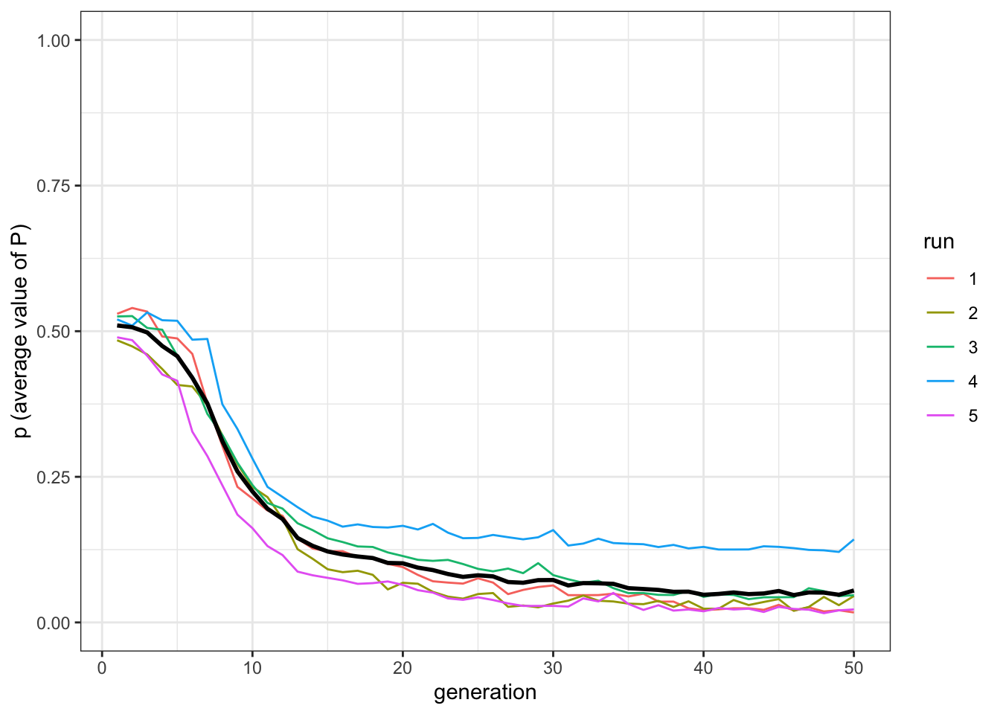
plot_multiple_runs_m(data_model, M = 1)

data_model <- openness_conservatism_2(N = 100, M = 10, mu = 0.1, p_death = 0.01, t_max = 50, r_max = 5)
plot_multiple_runs_p(data_model)
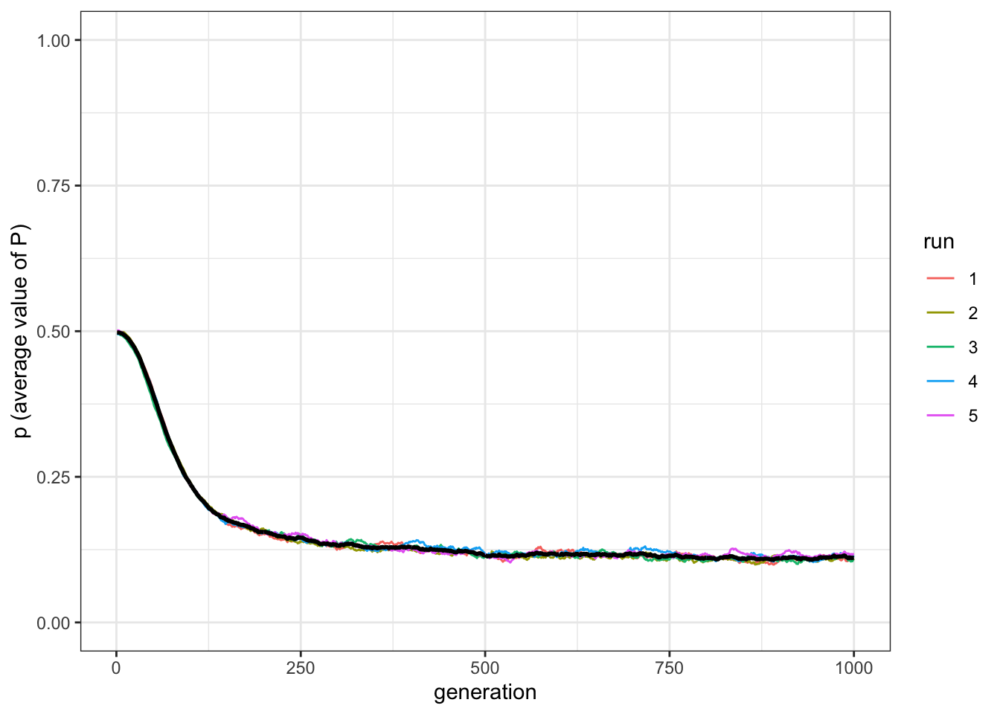
plot_multiple_runs_m(data_model, M = 10)
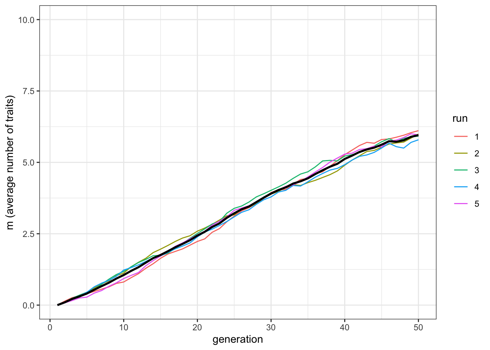
data_model <- openness_conservatism_2(N = 100, M = 10, mu = 0.1, p_death = 0.01, t_max = 1000, r_max = 5)
plot_multiple_runs_p(data_model)

plot_multiple_runs_m(data_model, M = 10)

data_model <- openness_conservatism_2(N = 100, M = 50, mu = 0.1, p_death = 0.01, t_max = 1000, r_max = 5)
plot_multiple_runs_p(data_model)
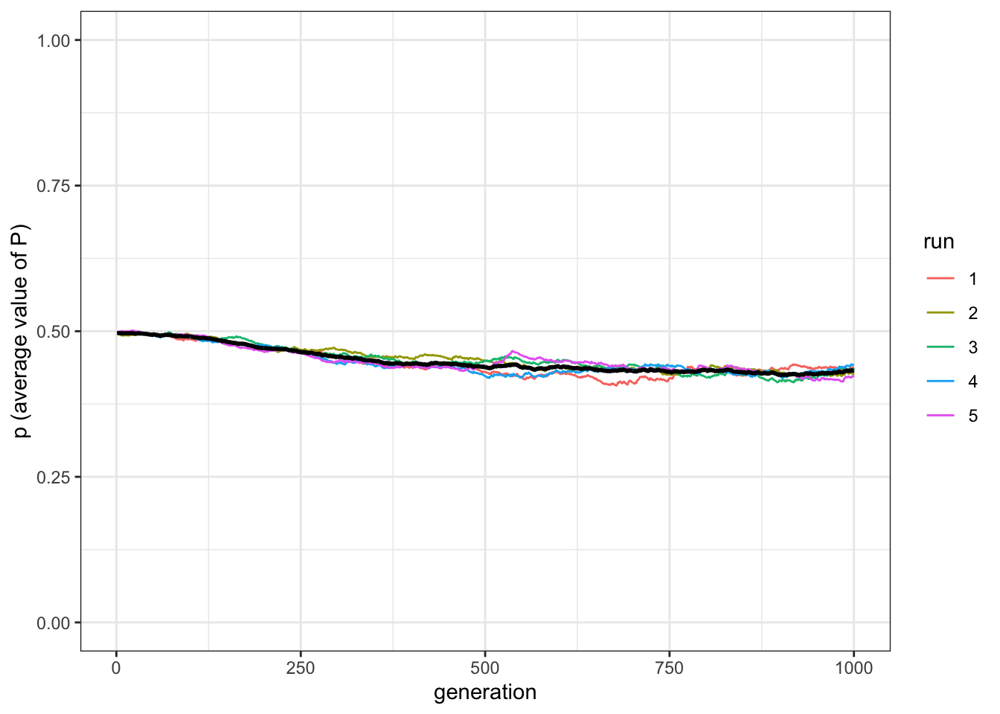
plot_multiple_runs_m(data_model, M = 50)

Visualise the full relationship:
test_openness <- tibble(M = c(1,5,10,20,50,100), p = rep(NA, 6))
for(condition in test_openness$M){
data_model <- openness_conservatism_2(N = 100, M = condition, mu = 0.1, p_death = 0.01, t_max = 1000, r_max = 1)
test_openness[test_openness$M == condition, ]$p <- data_model[data_model$generation == 1000, ]$p
}
ggplot(data = test_openness, aes(x = M, y = p)) +
geom_line() +
geom_point() +
theme_bw() +
labs(x = "Maximum possible number of traits", y = "p (final average value of p)")
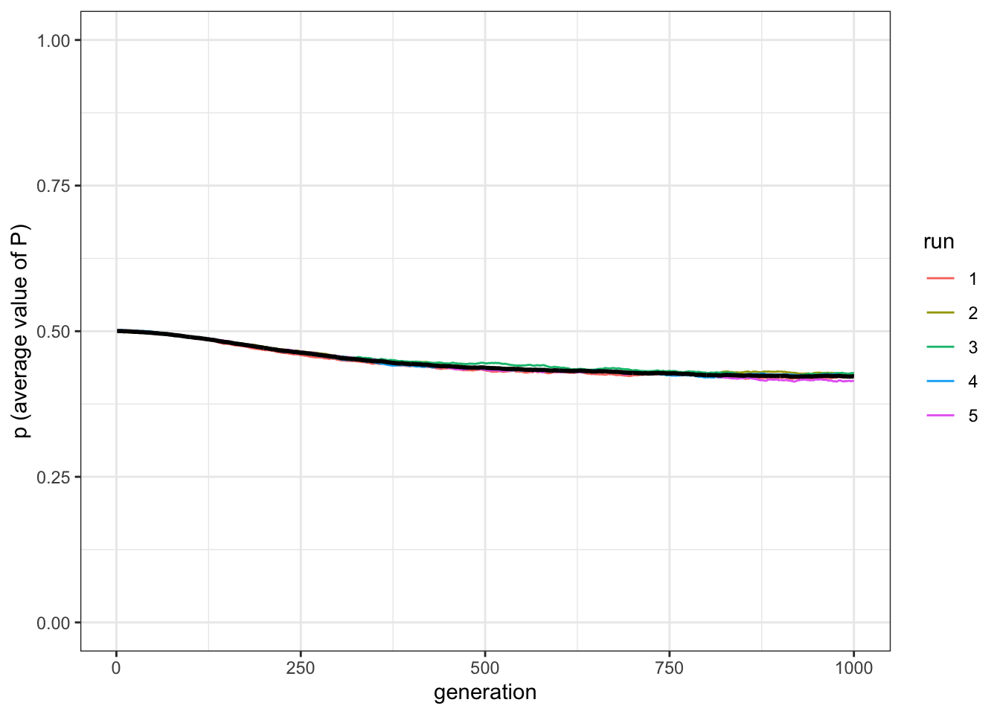
You can do the same for \(p_\text{death}\)
7 Social learning of social learning rules
In the models we explored so far, individuals decide whether to copy or not according to various rules, often called “transmission biases” in cultural evolution jargon. They may have a tendency to copy common traits, or to copy a subset of the population, or to prefer certain cultural traits with respect to others by virtue of their intrinsic characteristics, and so on.
A characteristic of all these models is that these rules were considered stable, or changing (perhaps because of genetic evolution) very slowly in comparison to the timescale considered in the model, so that we considered them as foxed. However, cultural evolution can also influence its own rules, that is, we can learn from others when, what, or from whom to learn from. This is far from being a rare instance: parents, at least in modern western societies, invest much effort in transmitting to children that learning from schoolteachers is important, or teenagers group discourage learning from other groups, or from adults in general. Educational system in countries such as Korea or Japan are thought to encourage pupils to learn and trust teachers almost unconditionally, whereas in countries like UK and USA, the emphasis is on individual creativity and critical thinking.
7.1 Openness and conservatism
How can we approach the social learning of social learning rules with simple models? To start with, we can imagine that individuals learn from others whether to copy others or not. We can imagine the simplest possible dynamic, where a single trait, P, both regulate the probability to copy from others and is the trait that is actually copied. When an individual has P=1 always copies others (we will call it a completely “open” individual), and when it has \(P=0\) he never copies others (we will call it a completely “conservative” individual). All intermediate values of P are possible. [NOTE: P IS A CONTINUOS TRAITS. WE WILL PROBABLY HAVE INTRODUCED THEM BEFORE, OTHERWISE WE NEED TO SAY SOMETHING]
After initialising the population with a random uniform sample of values of P, we can write the function to run the simulations.
EXPLAIN THE CODE HERE
We can now run the simulation, and plot it with a slightly modified function
plot_multiple_runs()(we just need to change the label for y-axis).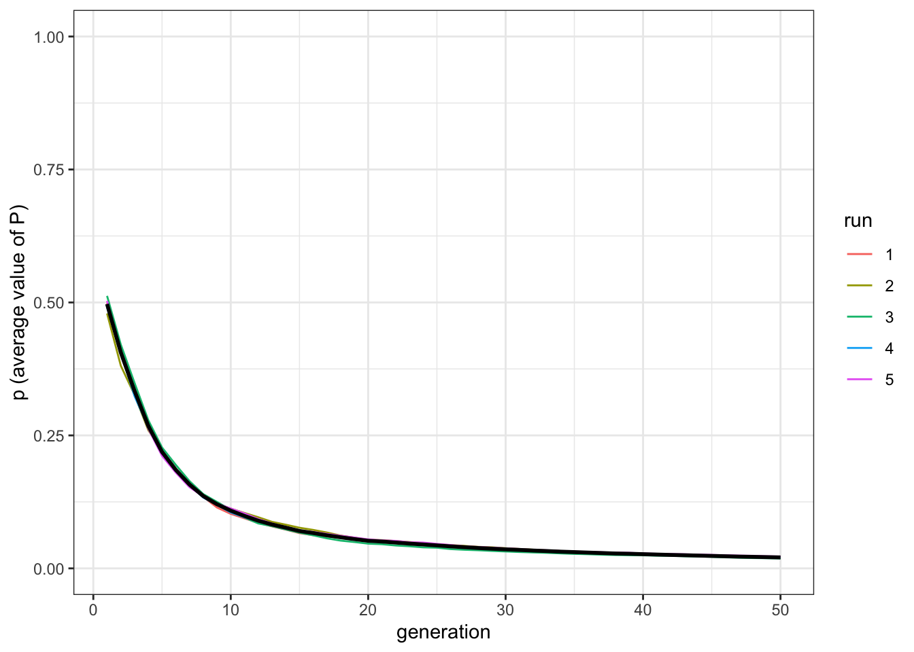
The average value of P in the population quickly converges towards 0 (in fact, towards the lower initial value, as there are neither mutations or innovations) in all runs. At this point of the book, you should be able to introduce mutation and innovation, as well as initialising the population with different values of P. What would happen, for example, if individuals start with values of P clustering around 1, that is, they are all initially very open? Another possible modification is that, when two individuals are paired, the individual with the higher P, that is the most open of the two, copy the other one.
At the risk of ruining the surprise, the main result of populations converging towards maximum conservatism is robust to many modifications (but you should try your own, this is what models are about). The result seems at first sight counterintuitive: the outcome of social transmission is to eliminate social transmission! A way to understand this result is that, conservative individuals, exactly because they are conservative, change less than open individuals and, in general, transitions from open to conservative happen more frequently than transitions from conservative to open. Imagine a room where people are all copying the t-shirt colors of each other, but one stubborn individual, with a red t-shirt, never changes. At some point, slowly but surely, all individuals will wear red t-shirts.
7.2 Maintaining open populations
The result above highlights a possibly interesting aspect of what could happen when social learning rules are themselves subject to social learning, but it does not represent, of course, what happens in reality. Some models, such as the Rogers’ model we explored in [chapter 8][Rogers’ model], are useful exactly because they force us to think how reality differs from the modeled situation. Individuals, in real life, remain open because learning from others is, on average, effective, and increase their fitness.
However,
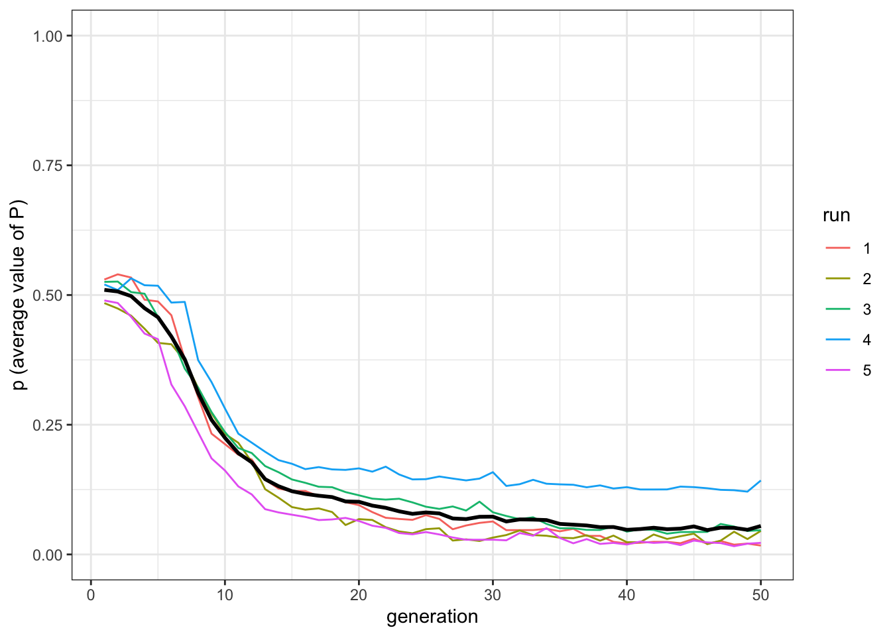
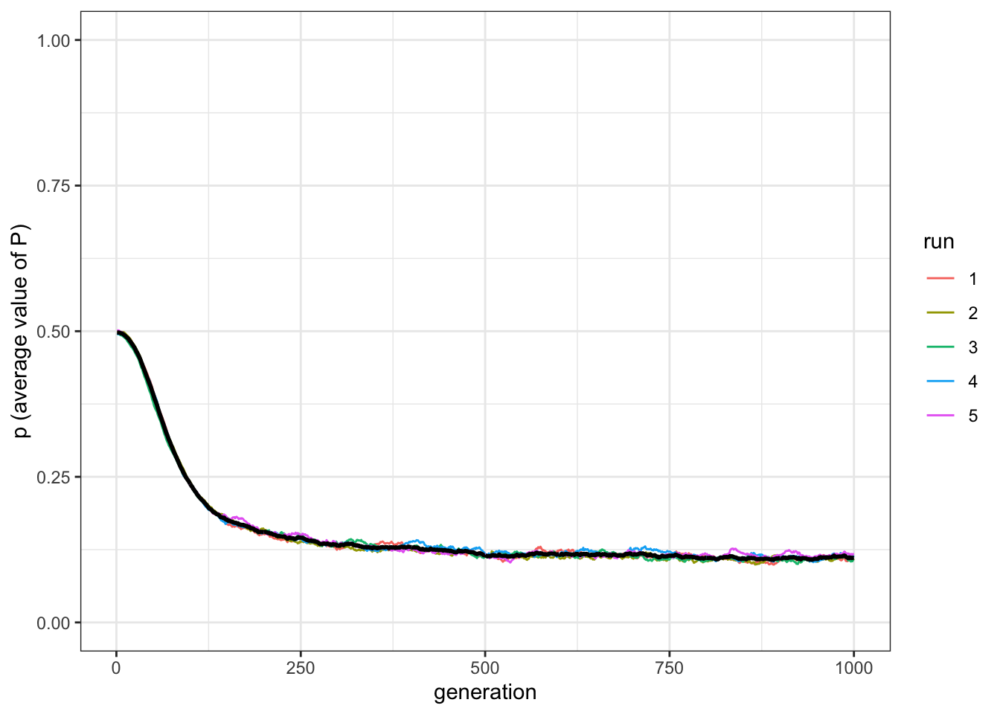
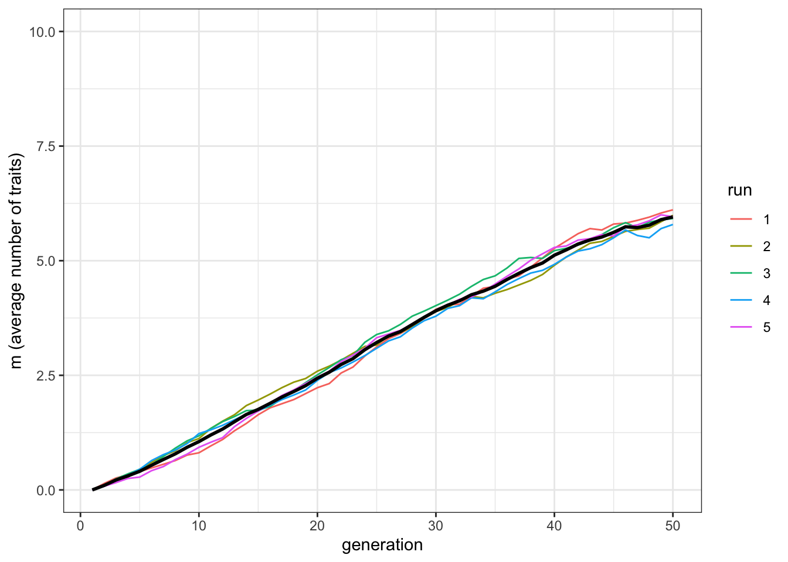
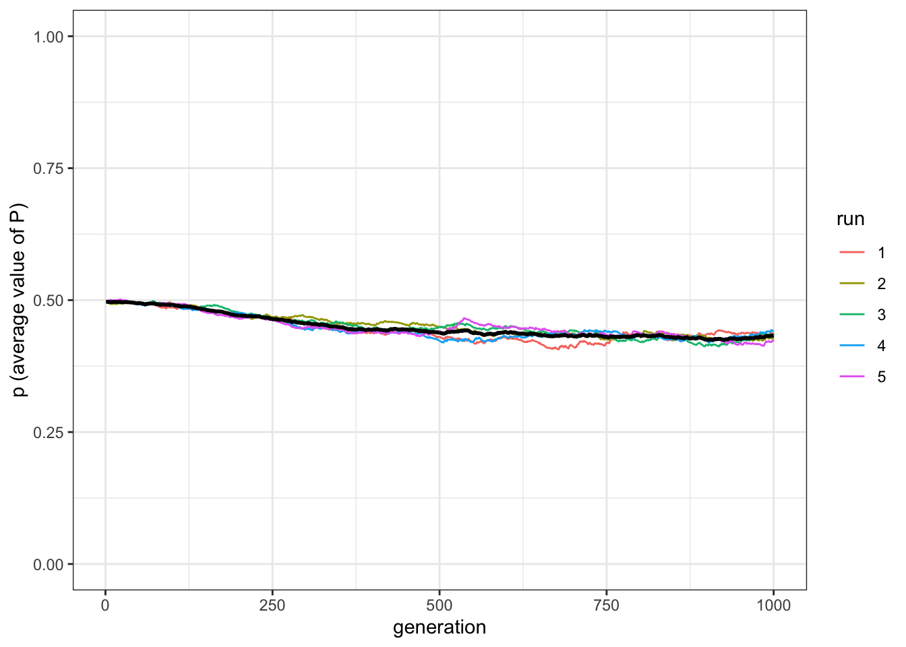
Visualise the full relationship:
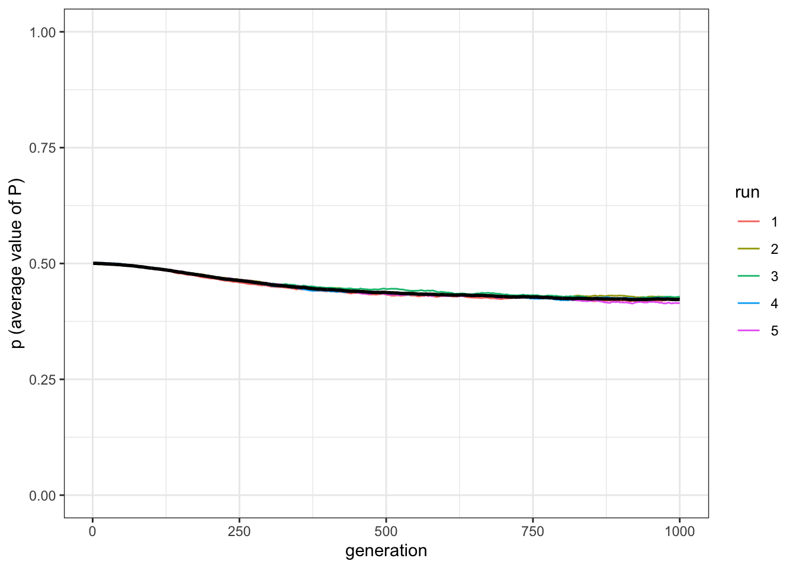
You can do the same for \(p_\text{death}\)
7.3 Summary of the model
TO DO
7.4 Analytical appendix
TO DO
7.5 Further readings
TO DO